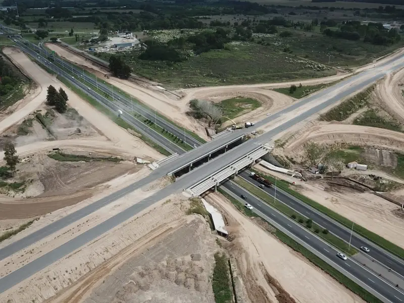
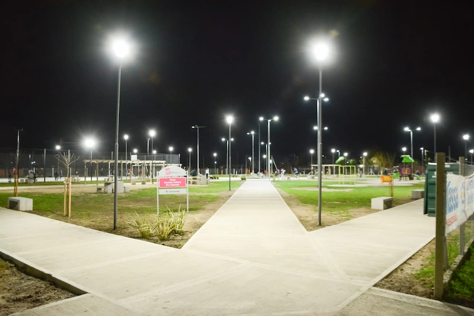
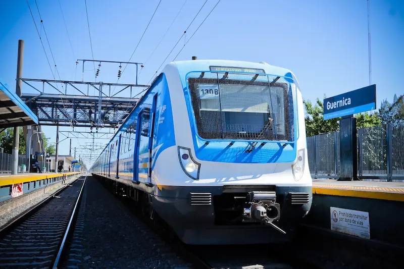
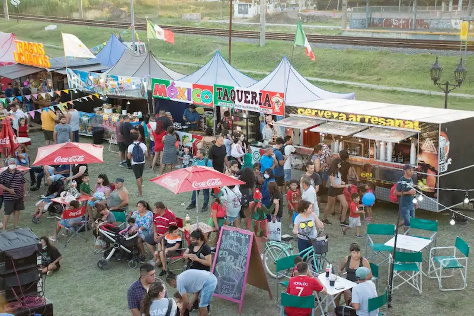
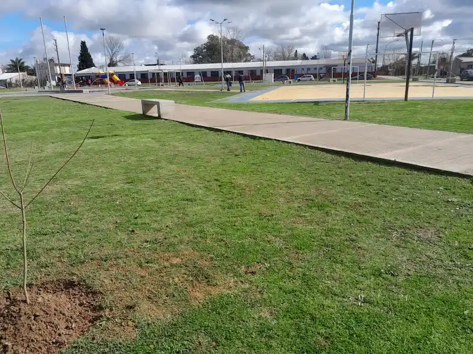
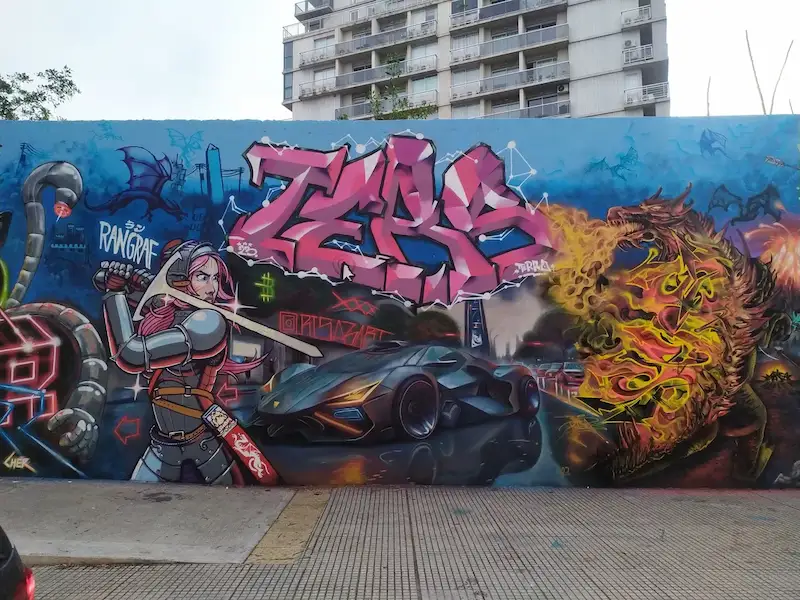

Guernica Chamber of Commerce
Inicio
Events
News
Subscribe
Contact

Autopista Presidente Perón en Guernica

Plaza San Martín, centro de Guernica

Estación de tren Guernica

Feria cultural local

Parque Municipal de Guernica

Arte callejero en Guernica